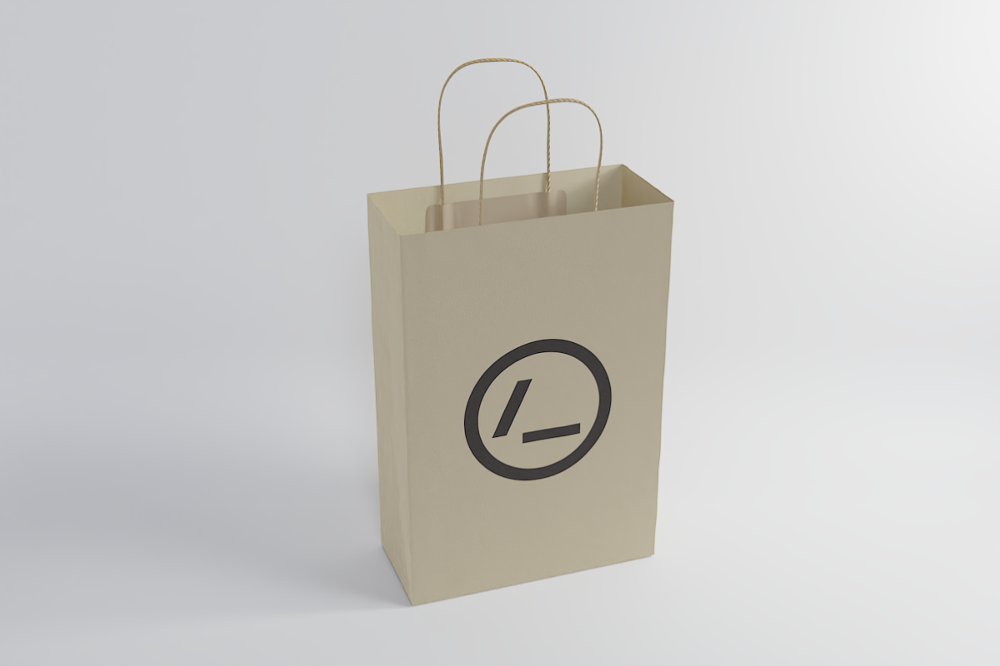
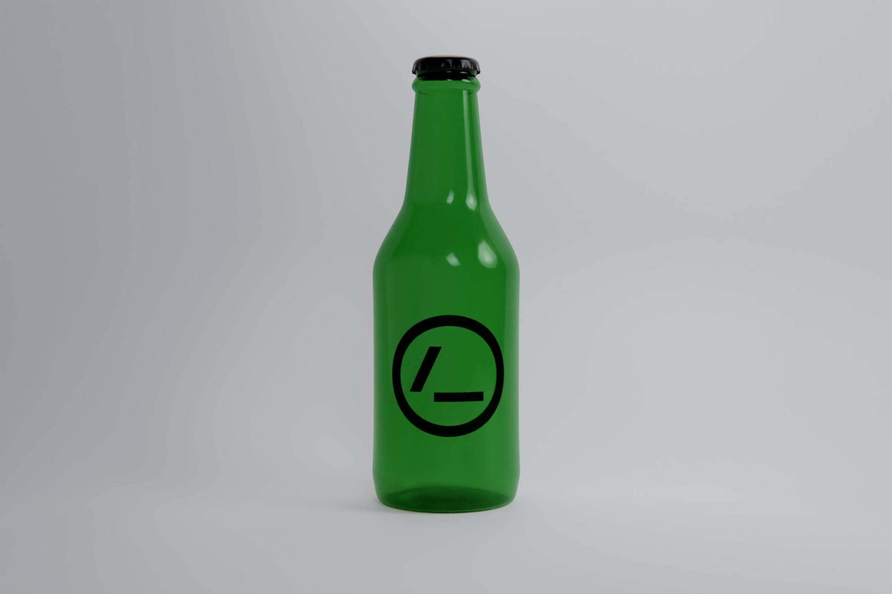
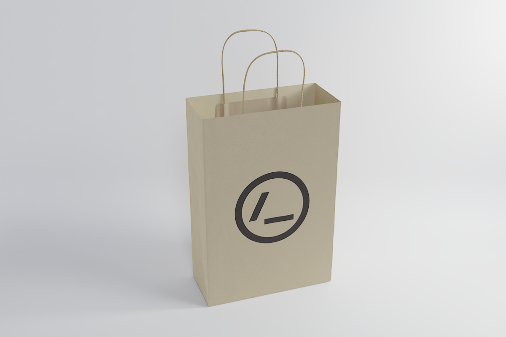
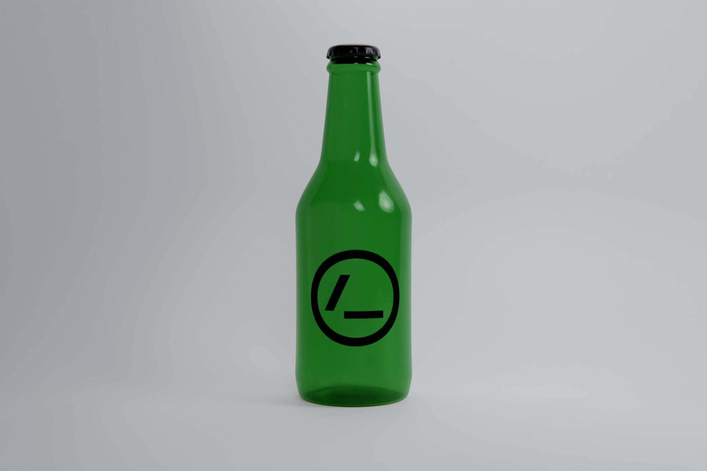
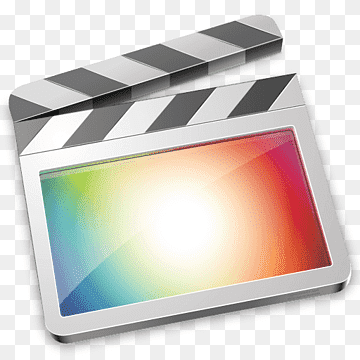
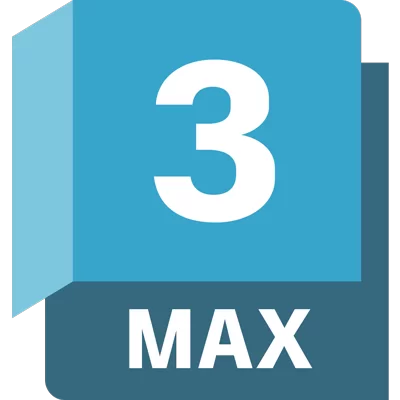

About me
La versión resumida: Especialista en modelado 3D con amplia experiencia en la industria del packaging. Destacado en el modelado hard surface y en la innovación de métodos y diseño de herramientas de modelado para optimizar la producción. Apasionado por explorar nuevas oportunidades en el mundo del diseño 3D y comprometido con el éxito de los proyectos.
La versión un poco más larga, soy Alvaro Perez, he pasado por infinidad de trabajos de toda índole que me han servido para tener infinidad de detalles que reflejo en la recreación 3d. Aunque pronto empecé en los medios audiovisuales en especial de la fotografía y el video en la que he pasado la mayor parte de mi vida profesional, desde pronto fuí insertando pequeñas animaciones 3d y esa sensación de dominar el proceso completo de la creación me fascino y aunque lo veía dificil decidi a dedicarme en exclusividad al 3d, y antes de seguir me gustaría decir que es la mejor decision que tomé, me encanta y nunca me cansaré de este trabajo.
Esta decisión me llevo a estudiar el grado de Comunicación Audiovisual en la Universitat Pompeu Fabra, donde me especialice en Interactivos y desarrolle un corto animado 3d y el TFG fue una demo del videojuego Cryptophasia entre otros. Con esto encontré practicas exclusivamente de 3d dónde después sería contratado por los siguientes 5 años. Y aunque voy a empezar por mi experiencia profesional pues es en definición la pagada, luego comentaré mi experiencia personal a la que dedico el mismo tiempo que la profesional, pues es dónde estudio, experimento y aprendo para luego implementarlo en el trabajo, asi que aunque lo tenga separado, para mi es un todo.
Experiencia Profesional
Mi parte profesional comienza en el sector del packaging como modelador y como todo modelador empecé uno a uno con el modelado clásico del hard surface. Pero no tardé en darme cuenta que el secreto de agilizar las entregas era reutilizar lo hecho.
 



Biblioteca personalizada
Para ello comencé a crear una biblioteca personalizada de modelos 3D reutilizables, reduciendo el tiempo de diseño. Implementé sistemas de organización eficientes para la biblioteca, facilitando la búsqueda y selección de componentes para su incorporación en nuevos diseños de packaging.
Actualmente tengo a disposición una biblioteca con más de mil modelos de todos los sectores, con medidas, referencias físicas reales y que cubre un porcentaje bastante alto de todos los envases de la industria.
Dominio de herramientas paramétricas avanzadas
Debido a las limitaciones de una biblioteca para su escalabilidad, como la falta de control sobre los modelos y la producción individualizada, estudié distintas vías para maximizar la producción y resolver los problemas destructivos de la creación de los modelos.
Para abordar estos desafíos, me tope con las herramientas paramétricas, que permiten la creación de modelos parametricos con características ajustables.
Utilizando esta metodología, diseñe y creé una serie de herramientas para la creacion de packaging con un caracter determinado, como botellas, doypacks, cintas, vasos, entre otros, que comparten características comunes.
Este enfoque innovador transformó nuestro proceso de producción, permitiendo generar cientos de modelos simultáneamente, con más exactitud debido a su carácter paramétrico y un menor peso de los objetos por su optimización, sustituyendo en la medida de lo posible al proceso manual y destructivo.
Y para los modelos que no cumplan para poder formarlos completamente con esta tecnologia parametrica, desarrollé herramientas puntuales de trabajos repetitivos o tediosos para poder usar insitu en el proceso de modelado manual. Como ejemplo: un unwrap que centra el UV y lo pone cuadrado, para la mayoría de etiquetas o un generador de rosca y contrarosca para hacer esta parte tediosa en unos pocos clicks, entre otras herramientas.
Addon de exportación
Otra herramienta que desarrollé junto a ChatGPT pero en python, por eso la necesidad de una ia, es un addon para blender que exporta en lote para cubrir la producción que en muchos casos se hacía en masa y de paso añadí algunas funciones más de carácter repetitivo.
Repositorio del addonWorkflow
Centrado más en la creación y mejora de las herramientas para producir modelos, hace posible que otros trabajadores no especializados en el modelado puedan generar modelos. Como resultado, la eficiencia y productividad de nuestro equipo aumentaron significativamente, acelerando la entrega de proyectos y mejorando la calidad de nuestros diseños.
Promociones y otros trabajos
A parte de la producción de modelos tambien hice promociones (desarrollar esto)
Experiencia Personal
Como comentaba mi experiencia personal esta ligada a la profesional, en el del modelado parámetro, no tenía claro como crear packaging porque realmente no sabía ni como funcionaba y me parecía realmente complicado.
Ciudades parametricas
asi como quería aprenderlo y para amenizar esta carga. Como justo en ese momento estaba haciendo una reimaginacion de mi pueblo a escala en 3d con Unreal, me vino la idea de generar ciudades procedurales y me pusé a estudiar Geometry Nodes de Blender, después de un año comenzaba a dominarlo y pude desarrollar esta idea, está vez llevandolo a Godot. Gracias a esto he podido profesionalizarme en el modelado procedural y saber aplicarlo a cualquier situación.
Assets
También mi parte de desarrollo de videojuegos me mantiene inquieto, por eso de vez en cuando tambien hago modelado de personajes y organismos, ya sea personajes para animarlos y poder moverlos en los motores de videojuegos o modelado de assets en general para el envivorement, para renders o en menor medida para imprimir.
Motores de videojuegos
Y ya desligando totalmente del modelado, mi otra pasión son los motores de videojuegos. No solo por los videojuegos si no por la interactividad 3d. Mi primer contacto fué con Unity en la demo del TFG, pero eso fué hace bastante y no tiene nada que ver con mi conocimiento actual. Dónde más tiempo he echado es en Unreal donde mediante los blueprint podia dar vida a los espacios y los personajes. Pero justo cuando comencé con Geometry Nodes conocí Godot y casi como con Blender me cautivo y es aquí donde hago mis proyectos actuales. Y como mis nociones de programación son realmente básicas, gracias a ChatGPT he podido crear todos los scripts que he necesitado, al igual que he podido desarrollar el addon de exportación y esta pagina.
Skills
Para terminar aunque especializado en el modelado y la produccion 3d, como buen seguidor de la filosofia DIY no hago separación y conozco y trabajo todas las partes como generalista.
Modelado hard surface y orgánico: De esto creo que no hace falta hablar más.
Shaders: Al igual que la geometria parametrica, hacer shaders parametricos es otra de mis pasiones y prefiero tener una biblioteca de de shaders parametricos que el pintado tradicional, que no quita que si lo necesito use Substance Painter o su alternativa open source Armorpaint.
Texturizado: Como ya comenté todo packaging suele tener una etiqueta, un sleeve que es un recubrimiento completo del envase o cualquier otro tipo de zona de personalizacion, asi que parte de mi trabajo diario es sacar varios tipos de mapas UV, para ello tambien he desarrollado herramientas parametricas para sacar los UVs de formas predeterminadas para el packaging que normalmente son cuadradas y esto era un trabajo manual.
Lighting/Camera: Por mi tiempo con las cámaras y mis posteriores estudios audiovisuales, tengo un amplio conocimiento real de la iluminación que aplico al entorno 3d.
Render: Aqui no tengo mucho que decir salvo que me gusta optimizar los tiempo y ajustar los render para maximizar la calidad en el menor tiempo posible. Otra rama bien estudiada.
Animación: Empecé haciendo animaciones pero a dia de hoy siendo sincero es la parte que menos me interesa.
Softwares


- 


- 


Educación

Grado en Comunicación Audiovisual, Interactivos 2014 - 2018
Nota al pie
El portafolio está totalmente dedicado a mis habilidades de creación 3d obviando mis otras habilidades, creo que se puede hacer un perfil de como soy y como trabajo, pero quiero añadir algunas cosas:
Trabajo en remoto desde hace bastantes años y estoy acostumbrado a organizarme y gestionarme con otros compañeros y grupos de trabajo, a las reuniones, a los deadlines, a un largo etc, y a entender y valorar cada situación. He llevado toda la producción de modelos, su organización y distribución y puesto en común con los otros departamentos para su entrega a los clientes.
Por otro lado soy amoldable a cualquier software o workflow, soy dinamico y me gusta aprender y dar lo mejor de mi mismo, solucionar problemas y sacar el trabajo adelante.
Contacto
Correo electrónico: email@example.com